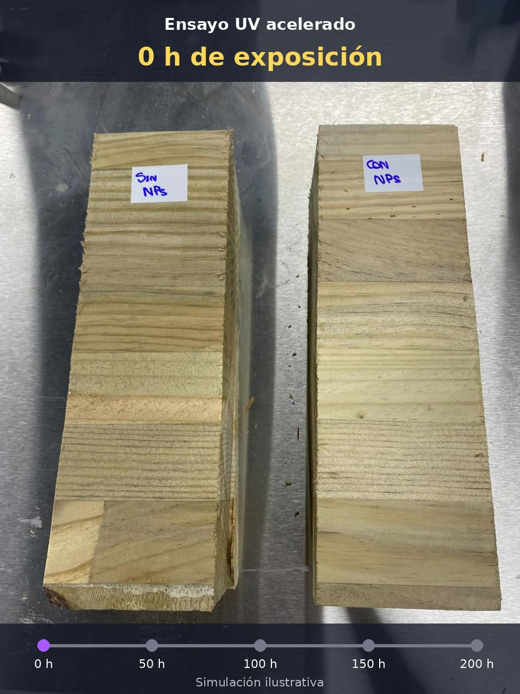

NC DOING
Nanotecnología aplicada a madera
Proceso de envejecimiento
Proceso de
envejecimiento UV
Madera con y sin nanopartículas · ensayo acelerado de 0 a 200 horas
Exposición UV acelerada
0
h
de exposición acumulada
Izquierda · Sin NPs
Derecha · Con NPs

SIN
NPs
CON
NPs
Resultado tras
200 horas
de exposición UV
Comparación visual en ensayo acelerado
Simulación ilustrativa. Resultados sujetos a las condiciones del ensayo.